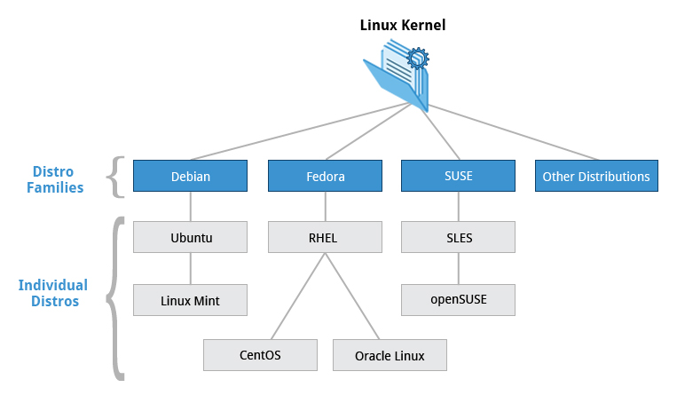
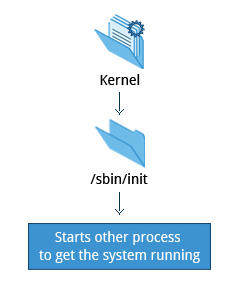

Linux Overview¶
Fedora¶
- Uses RPM-based yum package manager to install, update, and remove packages in the system
- RHEL is widely used by eterprises which host their own systems.
Debian¶
Ubuntu and Linux Mint
- Uses DPKG-based APT package manager (using apt-get, apt-cache,etc.) to install, update, and remove packages in the system
- Ubuntu used widely for cloud deployments


{kind=link}
/sbin/init and Services¶
{kind=link}
Once the kernel has set up all its hardware and mounted the root filesystem, the kernel runs the /sbin/init program. This then becomes the initial process, which then starts other processes to get the system running. Most other processes on the system trace their origin ultimately to init; the exceptions are the kernel processes, started by the kernel directly for managing internal operating system details.
Besides starting the system, init is responsible for keeping the system running and for shutting it down cleanly. One of its responsibilities is to act when necessary as manager for all non-kernel processes; it cleans up after them upon completion, and restarts user login services as needed when users log in and out, and does the same for other background system services.
systemd Features¶
Systems with systemd boot faster than those with earlier init methods. This is largely because it replaces a serialized set of steps with aggressive parallelization techniques, which permits multiple services to be initiated simultaneously.
Complicated startup shell scripts are replaced with simpler configuration files, which enumerate what has to be done before a service is started, how to execute service startup, and what conditions the service should indicate have been accomplished when startup is finished.
One systemd command (systemctl) is used for most basic tasks.
Starting, stopping, restarting a service (fooservice could be something like nfsd or the network) on a currently runnign system:
$ sudo systemctl start/stop/restart fooservice
Enablind or disabling a system service from starting up at system boot:
$ sudo systemctl enable/disable fooservice
Partitions and Filesystems¶
A partition is a logical part of the disk, whereas a filesystem is a method of storing/finding files on a hard disk.
Windows vs Linux
| Details | Windows | Linux |
|---|---|---|
| Partitions | Disk1 | /dev/sda1 |
| Filesystem type | NTFS/VFAT | EXT3/EXT4/XFS/BTRFS… |
| Mounting Parameters | DriveLetter | MountPoint |
| Base Folder where OS is stored | C: | / |